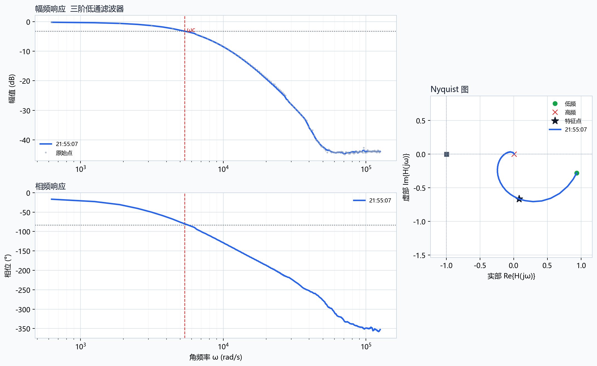

记录本次串口、命令、频率范围和点数，方便复现实测条件。
汇总滤波器族、阶次、关键频率、置信度和期望电路匹配状态。
把 AI 拟合模型拆成可阅读公式、参数和可信度说明，不再只给文本串。
| 时间 | 2026-06-16 21:55:07 |
|---|---|
| 来源 | COM13??+AI???? |
| 串口 | COM13 |
| 波特率 | 115200 |
| 扫频命令 | SWEEP 100 20000 100 1.2 + SWEEP 1040 4340 100 0.6 |
| 期望电路 | ???? |
| 点数 | 234 |
| 起始频率 Hz | 100.009 |
| 终止频率 Hz | 20000 |
| 识别结果 | 三阶低通滤波器 |
|---|---|
| 滤波类型 | lowpass |
| 阶次 | 3 |
| 特征角频率 rad/s | 5363.36 |
| 特征频率 Hz | 853.605 |
| 左截止 Hz | 853.605 |
| 稳定性 | 奈奎斯特判据显示闭环稳定，且稳定裕度较好。 |
| 判定 | 三阶低通系统 |
|---|---|
| 置信度 | 0.97 |
| Top3 | 低通/3阶 0.97 / 低通/2阶 0.67 / 低通/1阶 0.64 |
| 关键频率 | 截止频率 1676 Hz |
| 测量健康 | A 可直接验收（90/100） |
| 测量质量 | 无削顶；输入RMS中位数 0.4240 V；输出RMS中位数 0.0040 V；PA1 DC约 1.640 V；高频阻带可能接近噪声底 |
| AI结论 | AI 可以判断它更像 三阶低通系统，但模板拟合误差 5.95 dB 偏大；这组数据适合展示“AI 发现模型不够可信并要求补扫/扩展扫频”。 |
| 控制校正 | 未启用 |
| 测量补扫 | 模型拟合 RMSE=5.95 dB 偏大，建议加密关键频段；围绕低通截止频率 1676 Hz 加密扫频，建议命令 SWEEP 1010 4190 100 0.6。 |
| 故障证据 | 暂未触发故障知识库规则 |
| 下一步建议 | 模型拟合 RMSE=5.95 dB 偏大，建议加密关键频段；围绕低通截止频率 1676 Hz 加密扫频，建议命令 SWEEP 1010 4190 100 0.6。 |
| 表达式 | H(s) = (3.436e+12) / (s^3 + 6.196e+04s^2 + 1.280e+09s + 8.811e+12) |
|---|---|
| 参数 | K=0.3899, 模板=多级一阶级联模板, fc(-3dB)=1.68e+03 Hz, pole_fc=3.29e+03 Hz, wc=2.065e+04 rad/s |
| 拟合可信度 | 低：拟合偏差较大（R2=0.826<0.90、RMSE=5.95 dB>2 dB），当前传函只表示最接近的等效模型，不建议直接作为最终传函；建议补扫截止附近并检查异常频点。 |
| 分子系数 | 3.43567e+12 |
| 分母系数 | 1, 61963.1, 1.27981e+09, 8.81119e+12 |
=== 稳频仪：滤波器频响识别分析报告 ===
系统类型: 三阶低通滤波器
滤波器族: 低通滤波器
估计阶次: 3
判阶可靠性: 可靠（置信度 0.96）
期望电路: Auto
期望匹配: 未指定期望电路，按自动识别结果验收。
数据点数: 234
截止/特征判据: -3 dB cutoff
--- 识别证据 ---
幅频斜率证据: 低频端 -8.2 dB/dec，高频端 2.8 dB/dec。
幅值跨度: 44.5 dB。
相位跨度: 335.8°。
相位延迟补偿: 已使用/已考虑。
--- 测量质量诊断 ---
低通幅值模板拟合优先 3 阶；幅值 RMSE = 0.26 dB。
相位拟合支持 3 阶；相位 RMSE = 5.8°。
测量质量: 输入RMS中位数 0.4240 V，输出RMS中位数 0.0040 V。
峰峰值: 输入P-P中位数 1.1980 V，输出P-P中位数 0.0280 V。
削顶频点统计: PA0 0 个，PA1 0 个。
测量偏置: PA0 DC≈1.647 V，PA1 DC≈1.640 V。
重复采集幅值稳定性: 中位跨度 0.318 dB，最大跨度 5.011 dB。
重复采集相位稳定性: 中位跨度 0.0405 rad，最大跨度 0.6610 rad。
-3 dB 截止角频率 = 5363.36 rad/s
特征频点相位 = -83.27 °
幅频阈值 = -3.22 dB
最大/通带幅值 = 0.9762 (-0.21 dB)
=== AI辅助电路识别与智能诊断报告 v2 ===
智能识别: 三阶低通系统
判定策略: 传统频响分析为主判据：filter_analysis 已可靠判定为三阶低通系统（置信度 0.96），AI用于传递函数拟合、故障证据链和主动补扫建议。
置信度: 0.97（需补扫确认）
关键频率: 截止频率 1676 Hz
候选排名: 三阶低通系统 0.97 / 二阶低通系统 0.67 / 一阶低通系统 0.64
模型拟合: 低通3阶多级一阶级联模板: fc(-3dB)=1675.9 Hz, pole_fc=3287.2 Hz, R2=0.826；RMSE=5.95 dB, 最大残差=11.67 dB；参数={gain_db=-8.18, fc_hz=1.68e+03, pole_fc_hz=3.29e+03}
传函可信度: 低：拟合偏差较大（R2=0.826<0.90、RMSE=5.95 dB>2 dB），当前传函只表示最接近的等效模型，不建议直接作为最终传函；建议补扫截止附近并检查异常频点。
等效传递函数: H(s) = (3.436e+12) / (s^3 + 6.196e+04s^2 + 1.280e+09s + 8.811e+12)；K=0.3899, 模板=多级一阶级联模板, fc(-3dB)=1.68e+03 Hz, pole_fc=3.29e+03 Hz, wc=2.065e+04 rad/s；num=[3.436e+12]；den=[1, 6.196e+04, 1.280e+09, 8.811e+12]
测量健康: A 可直接验收（90/100）
测量质量: 无削顶；输入RMS中位数 0.4240 V；输出RMS中位数 0.0040 V；PA1 DC约 1.640 V；高频阻带可能接近噪声底
故障证据链: 暂未触发故障知识库规则
可能故障原因: 暂未发现明显硬件故障；本次补扫建议主要用于提高识别/拟合可信度。
AI实用结论: AI 可以判断它更像 三阶低通系统，但模板拟合误差 5.95 dB 偏大；这组数据适合展示“AI 发现模型不够可信并要求补扫/扩展扫频”。
建议实验动作: 下一步直接点“一键智能补扫”，执行 SWEEP 1010 4190 100 0.6。；若要演示 AI 的实用性，换 RC 值做对照：R 或 C 增大 2 倍，理论截止频率约减半；R 或 C 减小 2 倍，理论截止频率约翻倍。；若只演示滤波器识别，保持自动控制校正页关闭或不讲控制段，避免把滤波器验收和开环控制混在一起。
测量补扫建议: 模型拟合 RMSE=5.95 dB 偏大，建议加密关键频段；围绕低通截止频率 1676 Hz 加密扫频，建议命令 SWEEP 1010 4190 100 0.6。
控制校正建议: 暂无
下一步测试建议: 模型拟合 RMSE=5.95 dB 偏大，建议加密关键频段；围绕低通截止频率 1676 Hz 加密扫频，建议命令 SWEEP 1010 4190 100 0.6。
一键补扫计划: SWEEP 1010 4190 100 0.6 (围绕低通截止频率 1676 Hz 加密扫频)
补扫SWEEP建议: SWEEP 1010 4190 100 0.6
关键特征: 低频-2.1 dB，高频-43.9 dB，低频斜率-5.7 dB/dec，高频斜率8.9 dB/dec，相位跨度340.2 deg，Nyquist到(-1,0)最小距离0.781
无

{kind=link}
{kind=link}